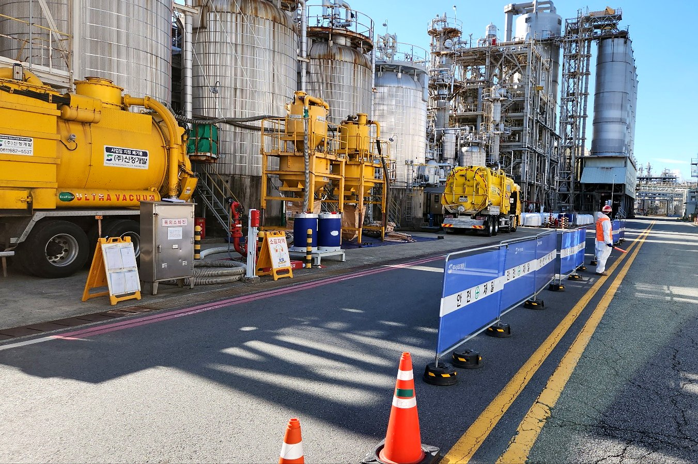

Chemical Cleaning
We chemically clean piping, heat exchangers, boiler tubes and other equipment systems

- Scope
- Plant piping · Heat exchangers · Cooling tower systems · Boiler tubes, inside and outside
- Main equipment
- Acid-resistant chemical cleaning units (50 HP / 20 HP)View equipment
- Related records
- APH and heat exchanger tube cleaning during scheduled maintenance (2022.05–2022.06)
- What to tell us
- Target equipment · Degree of fouling · Purpose of cleaning · Available work window
Chemical Cleaning:
ask us what is possible
Tell us the target equipment, the degree of fouling, the purpose of cleaning and the available work window, and we will tell you what scope is possible and how the work would proceed.